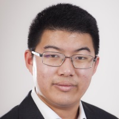
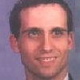

Current Members
Xinzhu Bei
PhD Student
Shay Deutsch
Postdoc
Natsuko Katase
Visiting Scholar
 Stephanie Tsuei
PhD Student
Stephanie Tsuei
PhD Student
Alexandre Tiard
PhD Student
 Yanchao Yang
PhD Candidate
Yanchao Yang
PhD Candidate

Albert Zhao
PhD Student
Former Students and Postdocs
Peng Zhao
Google
MS, 2018; BS, Swarthmore

Lunbo Xu
Google
MS (CS), 2014; BS Peking University
Joachim Valente
Google
MS (CS) 2014; BS, Ecole Centrale, Paris
Outstanding MS Award 2014
Jeremi Sudol
IPPLEX
PhD (CS) 2013; MS, NYU; BS, RPI
Luca Valente
Bloomberg (via BNP Paribas)
MS (EE) 2011; BS, Ecole Polytechnique
Outstanding MS Award 2012

Zhao Yi
Google
PhD (CS) 2011; BS, Tsinghua

Gregorio Guidi
Analyst, European Central Bank (via Central Bank of Italy)
Postdoc 06-07; PhD Scuola Normale Superiore, Pisa
Daniele Fontanelli
University of Pisa
Postdoc 06-07; PhD, Pisa
Alessandro Bissacco
Google
PhD (CS) 2006; BS, Padova

George Scarlatis
University of Kentucky
MD/PhD 2006
Alessandro Duci
Iason (via Depfa Bank, Arivis, Aletti Bank, Intel)
Postdoc 02-03; PhD Scuola Normale Superiore, Pisa
Former Visiting Scholars
Isaac Deutsch
NVIDIA
Visiting MS Student, 2016-2017
Weizhe Liu
PhD Student at EPFL
Visiting MS Student, 2017-2018
 Weiming Li
Samsung, China
Research Scientist, 2015-16
Weiming Li
Samsung, China
Research Scientist, 2015-16
Dongni Zhang
Samsung, China
Research Scientist, 2015-16
Manabu Kawashima
Sony, Japan
Research Scientist 2014-15
Xiaolin Tian
Xidian University, China
Visiting Researcher 2011-12
Hidekata Hontani
Associate Professor, Nagoya Institute of Technology, Japan
Visiting Professor 2010-11
Kazuya Hattori
Mitsubishi, Japan
Research Scientist 2008-09
Hisao Sasai
Panasonic
Research Scientist 2007-08
Nobuhiro Tsunashima
Sony, Japan
Research Scientist 2006-07
Jae-Young Choi
Visiting Scholar 2005-06